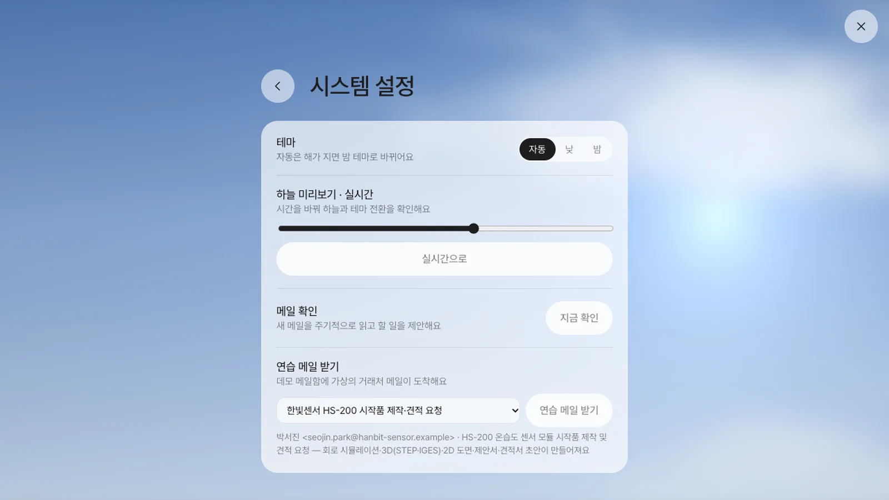
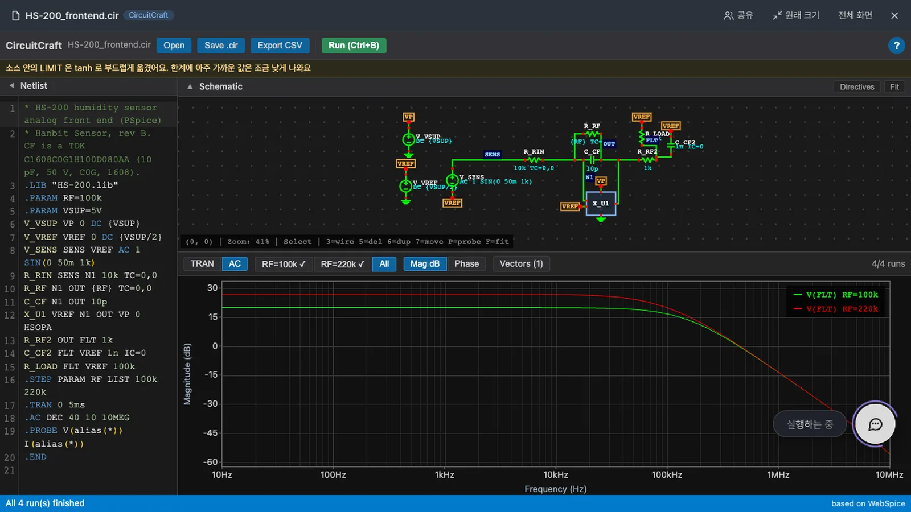
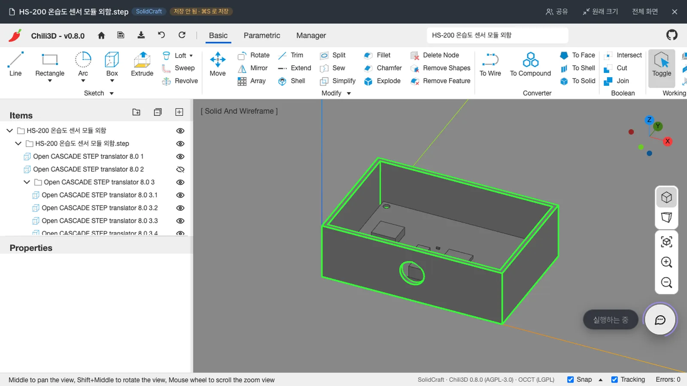
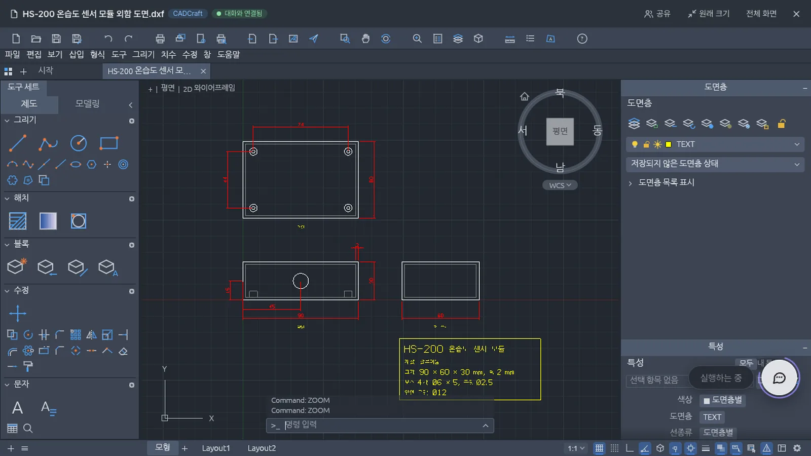
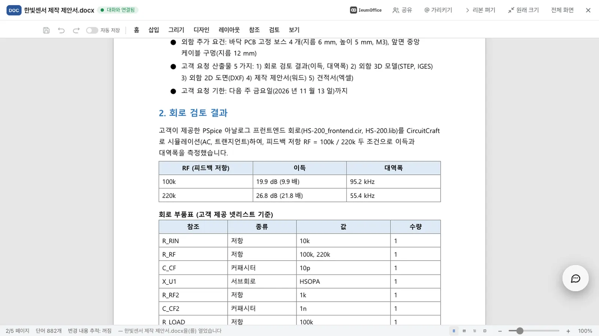
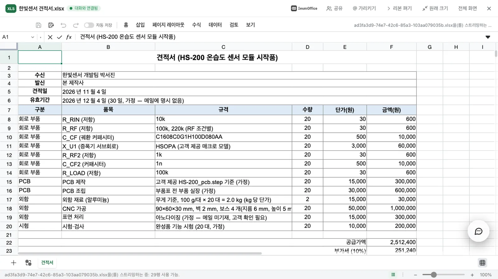
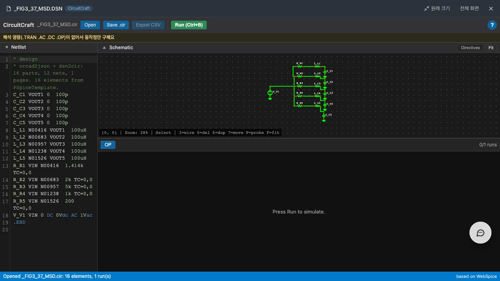

전자 제품 시작품을 요청하는 고객 메일이 오면 비서는 첨부된 PSpice 회로를 실제로 실행해 이득과 대역폭을 측정합니다. 외함을 STEP·IGES로 모델링하고 같은 치수의 2D 도면을 그린 뒤, 그 값으로 제안서와 견적서를 작성해 둡니다. 사람이 검토한 뒤 보냅니다.
▶ 시작품 요청 메일 · 3:03
이 장의 흐름#
메일 한 통에서 평면도·제안서·견적서까지에서 본 흐름을 전자 제품에 적용합니다. 고객이 회로 파일과 3D 파일을 보내고, 회신에 회로 검토 결과와 3D 모델이 포함된다는 점이 다릅니다.
고객 메일 ─▶ 시작품 요청으로 알아봄 ─▶ 첨부 받기(.cir .lib .step)
│
┌─────────────────────────────────┼───────────────────────────┐
▼ ▼ ▼
① 회로 돌리기 (CircuitCraft) ② 외함 모델링 (SolidCraft) ③ 2D 도면 (CADCraft)
이득·대역폭 재기 STEP·IGES, 고객 PCB 넣기 같은 치수의 삼면도
└─────────────────────────────────┼───────────────────────────┘
▼
④ 제안서(워드)·견적서(엑셀): 위의 값 그대로
▼
사람: 열어 보고 · 고치고 · 회신
핵심은 두 가지입니다.
- 값은 도구에서만 나옵니다. 이득과 대역폭은 시뮬레이션에서, 크기와 무게는 3D 형상에서 측정합니다. 메일에 없는 치수와 표면 처리, 단가는 가정한 값이라고 적습니다.
- 실행할 수 없으면 값을 내지 않습니다. 시뮬레이터에서 변환할 수 없는 회로는 잘못된 값을 내는 대신 어느 부품에 어떤 문제가 있는지 알립니다.
따라 하기 1 — 요청 메일이 도착한다#
- 연습 메일을 고릅니다. 데모 메일함을 쓰고 있다면 「설정 › 시스템 설정」의 「연습 메일 받기」에서 한빛센서 HS-200 시작품 제작·견적 요청을 고릅니다.
- 「연습 메일 받기」를 누릅니다. 메일에는 PSpice 회로(
HS-200_frontend.cir,HS-200.lib)와 PCB 3D 모델(HS-200_pcb.step)이 첨부되어 있고, 외함 치수와 회신에 포함할 문서 다섯 가지가 적혀 있습니다. - 채팅으로 돌아옵니다. 잠시 뒤 「시작품 자료 요청을 찾았어요」와 「첨부 3개를 받았어요」가 올라오고, 이어서 회로 결과와 파일 카드가 차례로 나타납니다.

따라 하기 2 — 회로를 열어 본다#
채팅에는 측정한 값이 다음과 같이 나타납니다.
PSpice 회로를 돌렸어요. RF=100k: 이득 19.9 dB(9.9배), 대역폭 95.2 kHz / RF=220k: 이득 26.8 dB(21.8배), 대역폭 55.4 kHz
확인해 주세요: 소스 안의 LIMIT 은 tanh 로 부드럽게 옮겼어요. 한계에 아주 가까운 값은 조금 낮게 나와요
회로의 .STEP 값마다 따로 측정하고, 근사 처리한 부분이 있으면 함께 알립니다.
.cir카드를 누릅니다. CircuitCraft가 라이브러리와 함께 파일을 열고, 넷리스트에서 회로도를 자동으로 그립니다.- Run을 누릅니다. 시뮬레이터는 브라우저 안에서 WebAssembly로 실행됩니다.
- TRAN, AC를 바꿔 봅니다. AC에서
All을 누르면 저항 값별 주파수 응답이 겹쳐 보입니다.Vectors에서 보고 싶은 노드만 고릅니다.

따라 하기 3 — 3D 모델을 본다#
.step카드를 누릅니다. SolidCraft에 메일의 치수(90 × 60 × 30 mm, 벽 2 mm)로 만든 외함이 열립니다.- 돌려 봅니다. Shift를 누른 채 마우스 가운데 버튼으로 끌면 모델이 회전합니다. 휠로 확대합니다.
- 뚜껑을 숨깁니다. 왼쪽 목록에서 둘째 파트의 눈 아이콘을 누르면 고객이 보낸 PCB가 보스 위에 놓인 모습이 보입니다.
.igs카드도 엽니다. 같은 모델의 IGES 파일입니다. IGES에는 솔리드가 없어서 면으로 바뀝니다.

따라 하기 4 — 2D 도면을 본다#
.dxf 카드를 누르면 CADCraft가 열립니다. 3D와 같은 치수로 그린 윗면, 앞면, 오른쪽 면에 치수가 표시되어 있습니다. 표제란에는 재질과 크기, 보스, 구멍이 적혀 있습니다.

따라 하기 5 — 제안서와 견적서를 본다#
몇 분 뒤 워드 문서와 엑셀 카드가 올라옵니다.
- 제안서를 엽니다. 회로 검토 표에는 위에서 측정한 이득과 대역폭이 그대로 담겨 있고, 그래프와 3D 그림, 도면이 설명과 함께 들어 있습니다. 메일에 없던 표면 처리 같은 조건에는 「가정」이라고 적혀 있습니다.
- 견적서를 엽니다. 품목은 회로의 부품표에서 가져옵니다. 메일에서 지정한 부품 번호(
C1608C0G1H100D080AA)가 해당 줄에 있고, 금액은 모두 수식으로 계산됩니다. - 단가를 고칩니다. 단가는 가정값입니다. 공급사 견적을 받아 단가를 고치면 합계가 다시 계산됩니다.


따라 하기 6 — OrCAD 회로도를 연다#
고객이 OrCAD Capture의 .dsn 파일을 보내기도 합니다. .dsn 카드를 누르면 서버가 PSpice 넷리스트로 바꾸고, CircuitCraft가 회로도를 그립니다.

.dsn에는 해석 명령이 없어서 동작점만 구합니다. 모델이 없는 부품이 있으면 시뮬레이션을 실행하지 않고 해당 부품의 이름을 알립니다. 라이브러리 파일을 함께 열면 실행됩니다.
어떤 파일을 읽고 쓰나#
| 파일 | 읽기 | 쓰기 |
|---|---|---|
PSpice 넷리스트·라이브러리 (.cir .net .ckt .sp .lib .mod .inc) |
됩니다 | 됩니다. 받은 내용은 그대로 두고 수정한 줄만 바꿉니다 |
OrCAD Capture (.dsn) |
부품, 값, 연결을 읽습니다 | 안 됩니다. PSpice 넷리스트로 저장합니다 |
STEP (.step .stp) |
됩니다 | 됩니다. 솔리드가 유지됩니다 |
IGES (.igs .iges) |
됩니다 | 됩니다. 면으로 바뀝니다 |
벤더 부품 파일
부품 회사가 배포하는 STEP과 SPICE 모델도 같은 방법으로 엽니다. 다만 재배포가 금지된 파일이 있으니 회사 안에서 사용할 수 있는 범위를 확인하세요. Cadence로 암호화된 모델은 PSpice 밖에서 실행할 수 없습니다.
실행하지 않는 회로#
| 상황 | 비서와 CircuitCraft가 하는 말 |
|---|---|
LAPLACE, FREQ, 디지털 소자, IGBT |
어느 소자의 어떤 기능을 이 시뮬레이터가 지원하지 않는지 알립니다 |
| 부품 정의가 어디에도 없음 | 부품 이름을 알리고 라이브러리를 함께 달라고 합니다 |
| Cadence 암호화 모델 | 그 부품은 PSpice 밖에서 실행할 수 없다고 알립니다 |
.INC한 넷리스트가 빠짐, 부품 정의만 있는 파일 |
실행할 회로가 없다고 알립니다 |
.MC, .WCASE |
해당 해석은 실행하지 않았다고 알립니다(나머지는 실행합니다) |
얼마나 믿을 수 있나#
공개된 실제 파일로 측정했습니다(2026-11-04).
| 무엇을 | 대상 | 결과 |
|---|---|---|
| 실제 OrCAD 프로젝트 시뮬레이션 | 180개 | 167개 성공 |
| PSpice가 남긴 결과와 비교 | 값이 있는 내부 노드 189개 | 모두 2% 이내 |
OrCAD .dsn 읽기, Capture 넷리스트와 대조 |
설계 141개 | 139개가 부품, 값, 연결까지 일치 |
| 벤더가 배포한 STEP·IGES | 13개 | 모두 읽고 쓰고 다시 읽음 |
알아 둘 한계
결과 파일을 실제 OrCAD에서 열어 보지는 못했습니다. 부품이 수백 개인 보드는 넷리스트와 부품표가 정확하지만, 자동 배치된 회로도가 작아 화면에서 읽기 어렵습니다. 소스 안의 LIMIT은 수렴을 위해 부드러운 함수로 변환하므로 한계에 아주 가까운 값은 조금 낮게 나옵니다.
확인 문제#
-
첨부에 회로 파일이 없는 시작품 메일이 오면 어떻게 되나요?
정답 보기
회로 검토만 건너뛰고 그 사실을 알립니다. 외함, 도면, 제안서, 견적서는 만듭니다. -
메일에 외함 벽 두께가 없으면 어떻게 하나요?
정답 보기
기본값으로 만들고, 제안서에 가정한 값이라고 적습니다. -
.dsn을 고쳐서 다시.dsn으로 보낼 수 있나요?정답 보기
아니요. 읽기만 합니다. 고친 내용은 PSpice 넷리스트(.cir)로 저장합니다. -
변환할 수 없는 문법이 포함된 회로를 열면 왜 값을 보여 주지 않나요?
정답 보기
실행을 멈추는 것보다 잘못된 값을 내는 것이 더 나쁘기 때문입니다. 변환하지 않은 op-amp 회로는 오류 없이 99 kV를 낸 적이 있습니다.
다음 장에서는 8부의 두 번째 예시로, 이벤트 소싱 ERP에서 전표를 처리하고 말로 취소하고 전망을 묻습니다(30장).